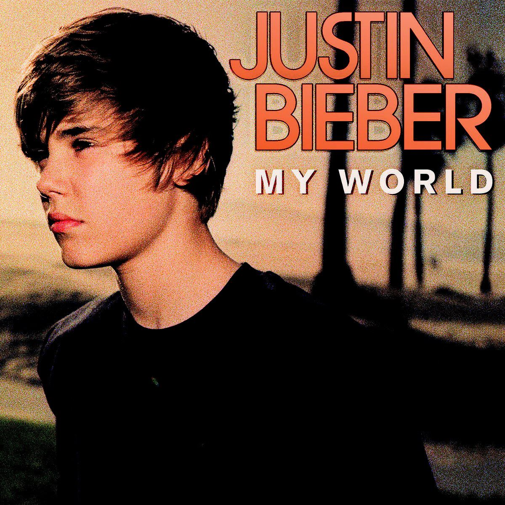
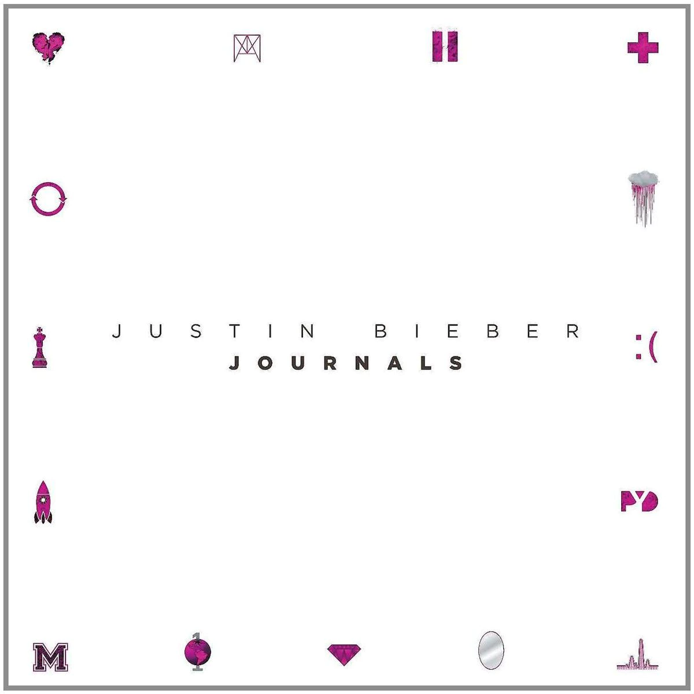
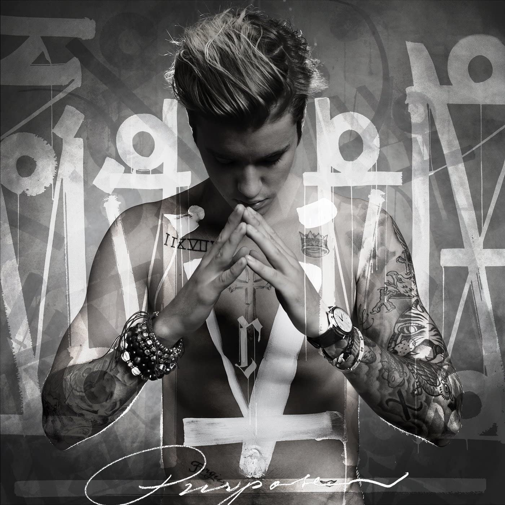
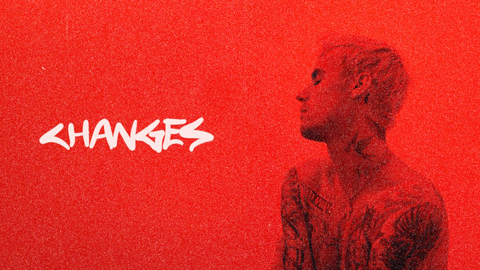
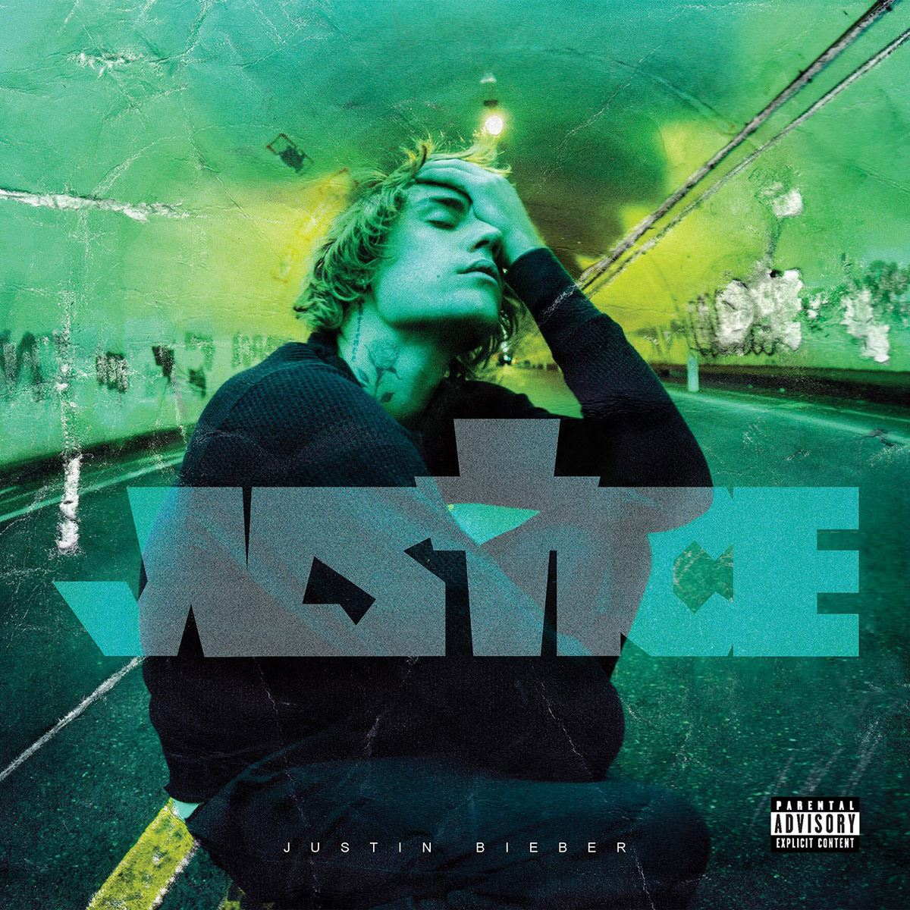

Scooter Braun, un ex ejecutivo de marketing de So So Def, vio casualmente uno de los videos de Justin Bieber en el año 2008 cuando se encontraba en Internet, mientras buscaba videos de otro artista musical. Impresionado, investigó el teatro en el que el joven cantante se presentaba en aquel momento, localizó su escuela y finalmente se puso en contacto con la madre de Justin. Justin viajó solo junto a Scooter Braun a Atlanta, Georgia, Estados Unidos, para que grabase su primera Demo. Tras ello, Justin firmó un contrato con Raymond Braun Media Group (RBMG), una empresa conjunta entre Braun y Usher. Posteriormente Usher planificó una audición con L.A. Reid, de Island Def Jam Music Group, quien fichó a Justin Bieber en la compañía discográfica Island Records en el mes octubre de 2008. Desde entonces Justin Bieber estableció su residencia en Atlanta, Estados Unidos, esta vez junto a su madre, Pattie. |
|  | Su primer álbum My World salió al mercado el 17 de noviembre de 2009 y debutó en el número seis de la Billboard 200. Consta de ocho canciones entre ellas su primer sencillo: One time. El sencillo tuvo mucho éxito en los mercados internacionales, en otoño de ese mismo año. El 7 de enero de 2010 «One Time» recibió una certificación de platino por la RIAA en los Estados Unidos y el 27 de septiembre en Canadá y también recibió una certificación como disco de oro en Australia y Nueva Zelanda. |
En enero de 2010 publicó «Baby», el primer sencillo de My World 2.0 — continuación de My World —, y donde canta junto a Ludacris. En esa misma fecha sacó el disco que ocupa el tercer puesto entre los discos de Justin, cuyo disco fue acústico de My World 2.0, es decir, tan solo utilizó su voz y algún instrumento para grabarlo. |
El 1 de noviembre de 2011 salió a la venta su segundo álbum de estudio titulado Under the Mistletoe. En la primera semana de lanzamiento el disco vendió alrededor de 210,000 copias y debutó en la posición número uno de la lista de éxitos estadounidense Billboard 200. Este fue un disco muy importante ya que se pudo presenciar por primera vez el cambio de voz del Justin. Fue un cd navideño en donde Justin reveló que le encantan las navidades y por eso quería hacerles un regalo a todas sus fans. |
A finales del año 2011 Bieber empezó a grabar su tercer álbum de estudio titulado Believe. El 22 de febrero de 2012, Justin anunció a través de su cuenta de Twitter que el primer sencillo de Believe sería publicado en marzo de ese año. Consta de dieciséis canciones entre ellas: Boyfriend y As long as you love me, unas de las canciones más destacadas. Para el 29 de enero de 2013 sacó Believe Acoustic cuyo disco es una colección de 11 canciones de las cuales 8 son versiones acústicas de temas incluidos en Believe: "Boyfriend", "As Long As You Love Me", "Beauty and a Beat" o "All Around The World", "Take You", "Be Alright" y "She Don't Like The Lights" y una versión de estudio en directo de "The Fall. |
|  | En octubre de 2013, Bieber anunció que lanzaría una nueva canción cada lunes durante diez semanas. El primer sencillo de la denominada serie Music Mondays, «Heartbreaker», fue lanzado el 7 de octubre. El segundo sencillo, «All That Matters», fue lanzado el 14 de octubre, seguido de «Hold Tight» el 21 de octubre, «Recovery» el 28 de octubre, «Bad Day» el 4 de noviembre, y «All Bad» el 11 de noviembre. El séptimo sencillo, «PYD», interpretado junto a R. Kelly, fue lanzado el 18 de noviembre; fue seguido por «Roller Coaster» el 25 de noviembre, y «Change Me» el 2 de diciembre. El último sencillo, «Confident», interpretado junto a Chance the Rapper, fue lanzado el 9 de diciembre de 2013.Ese mismo día, se anunció que estos diez sencillos se presentarán en una futura colección llamada Journals. |
Purpose es el cuarto álbum de estudio de Justin Bieber lanzado el 13 de noviembre de 2015 y debutó en el número uno en el Billboard 200. Fue el cuarto álbum más vendido de 2015 con ventas mundiales de 3,1 millones de copias. A junio de 2016, había vendido 4.5 millones de copias a nivel mundial. Como primer single What do you mean? una canción número 1 en listas de medio mundo. Como segundo Sorry. Así como tambien, se incluye el Where are ü now, su colaboración con Jack Ü (Skrillex y Diplo). |
 |
|  | El 24 de diciembre de 2019, Bieber anunció que lanzaría su quinto álbum de estudio. El primer sencillo del álbum, "Yummy", fue lanzado el 3 de enero de 2020. Debutó en el número dos en el Billboard Hot 100. Apareciendo en The Ellen De Generes Show el 28 de enero de 2020, Bieber finalmente confirmó la fecha de lanzamiento de su quinto álbum de estudio, Changes, siendo publicado el 14 de febrero de 2020. |
Justice es el sexto álbum de estudio de Justin Bieber lanzado el 19 de marzo de 2021. “Al crear este álbum mi objetivo es hacer música que proporcione confort, hacer canciones con las que las personas puedan conectar y que se sientan menos solas. El sufrimiento, la injusticia y el dolor pueden producir una sensación de desamparo. La música es una manera de recordarnos que no estamos solas. Aquí estoy yo, aportando mi parte. Mi pequeña parte, dice Justin Bieber". |
 |